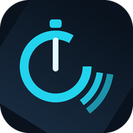

语音倒计时播报器
分 : 秒 : 百分秒
安装到桌面
00
:
00
:
00
剩余 00:00 · 下次播报 --:--
倒计时设置
:
:
00
前四位为「分:秒」，末两位为百分秒，固定从 00 起倒计
30 秒
1 分钟
3 分钟
5 分钟
10 分钟
15 分钟
开始
重置
播报语音
人声
试听
刷新
语速
1.0
音调
1.0
音量
1.0
播报内容
纯数字（50）
数字＋秒（50秒）
还有 50 秒
结束提示
倒计时开始时先播报一次
结束时蜂鸣提示音
最后 10 秒播报时振动
计时中保持屏幕常亮
剩余时间 > 10 秒：每经过一个 10 秒节点播报一次（如 50、40、30…）
剩余时间 ≤ 10 秒：每整秒播报一次（10、9、8…1），归零播报结束提示